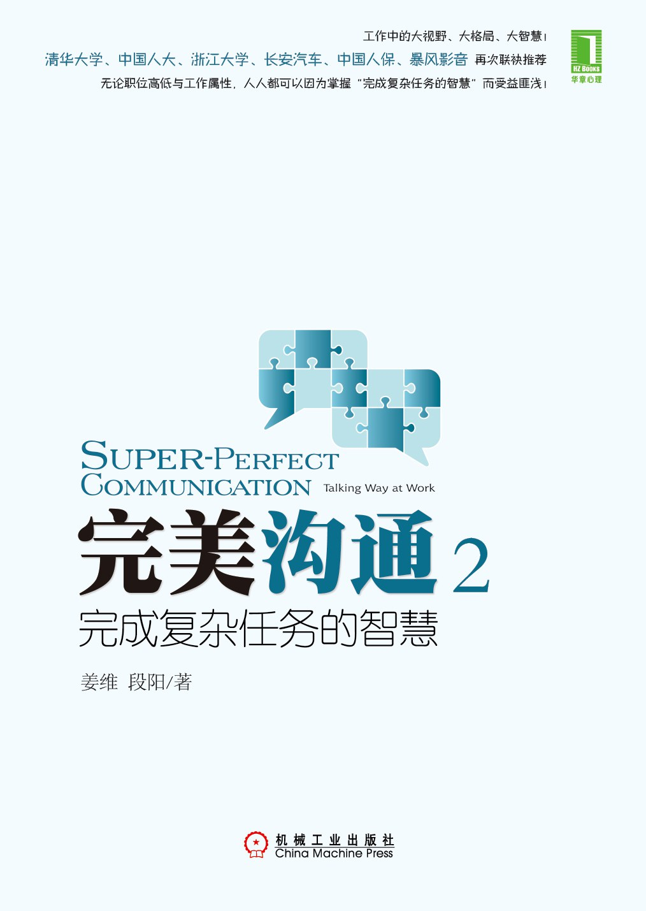

|  |
完美沟通2：完成复杂任务的智慧
姜维 段阳
|
前言
案例人物
第1章 何为复杂沟通
复杂沟通，是智慧不是知识
高难度沟通，难在何处
复杂沟通是一座桥梁
两个经理人的教训
不做沟通只做事情，肯定不行
要面子，还是要结果？
只做沟通不管目标，也是不行
§ 沟通不是一团和气，需要决断
Presentation，小技不可小视
Presentation是一面镜子
人人都在舞台上
第2章 复杂沟通从面对面开始
沟通最好“不见不散”
越来越多的人不会说话了
§ 面对面的优势
领复杂任务，得人脉开发机
被问是赏赐，不一定要回答
§干系人是一个关系网络
老资格要有高风范
§ 倾听，是对人最好的一种尊重
倾听，是建立关系最快的一种方式
为什么做过项目的人容易晋升
复杂任务，少不了“打杂”的
怎么就一步一步地“上当”了
打杂是好事，杂务不杂就行
高级干部也需要“打杂”
第3章 领导级别的沟通范儿
什么领导需要单独汇报
§ 战略上的优先：擒贼擒王
§§ 战术上的优先：不惜试错
§ 控制住自己的嘴巴：沉默更有力
§§ 为什么要单独去汇报呢
解决复杂问题，权力大不如影响力大
失败的高层汇报会
口头汇报的2个原则
§ 只讲要点，对方有兴趣再展开
§§ 只讲事实，对方一再追问才说判断
责任人没来，如何说
§§ 大领导突然偏爱你，咋办
如何救火，效果才好
§§ 会后会的艺术，谁主动谁胜算大
出成果的效率方式：找到、找准问题
工作好坏难说，沟不沟通是关键
§ 有难处时，打“法不责众”牌
救火3招：方法、保障、态度
第4章 变变变，打破复杂沟通困境
复杂沟通，需要高人指点
有2种高人，不容错过
为何找入职一月的干部谈话
沟通不到位，好心没好报
工作中，好人不好，坏人不坏
§§ 好沟通需要从坏处着想
变革，重新获得对话的基础
平等的心态，才有平等的对话
§ 获得优势地位的3种变革方式
你会聆听吗
§ 如何发问
让别人表演，你做好导演
第5章 慢即快，做好工作规划沟通
请客吃饭与工作动员
说工作任务的2个工具
§§ 好领导的“三说”
从事实到真相的沟通过程
§ 做好配角，谁都喜欢你
§§ 区分，看山是山VS看山还是山
沟通的目标与角色扮演
§ 上传下达不是沟通？
回应下属什么
§§ 沟通中的4个角色设计
第6章 失败的工作例会
第一次主持工作例会
确认了参加会议，你就放心了？
部门协作难，难在都是平起平坐的
会议救场如救火
准时开会，才能控制住局面
§§ 优先让好人说话，形成有利局面
§ 形成有利局面后，不忘惩罚一下恶人
人家为什么不买账
成见是我们自己搞出来的
说服不通，不如不去说服
在山底的人，何谈风景
为什么要开工作例会
目标不清晰，例会成无头蝇
建立共识，付诸行动
定期例会与流动例会
靠得住的是自己，行动学习吧
第7章 开好工作例会的策略
工作例会的内容策略
会议内容，需要模板来控制
§ 经理的水平，就看能不能补充意见
“意外”讲话，总是很有效果
新酒还是要用新瓶装
该求援时就求援吧
§ 难以启齿，害了自己
§ 明知故问，让对方自己承诺
一个项目，一个目标，一个团队
§§ 借领导造势的4种方式
如何提升人际凝聚力
§ 如何挖掘任务凝聚力
会前会，是重要会议成功的基础
§§ 什么人说话做事要多留余地
后记